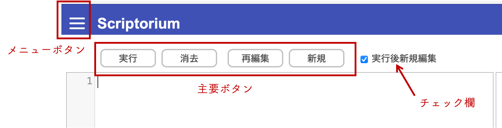

使い方
主要ボタン
- 実行
- 消去
- 再編集
- 新規
エディタの中に書かれたプログラムを実行する。
図が描かれる領域（ペイン）の中を白く塗りつぶして消去する。
直前に実行したプログラムを再度エディタの中にコピーして表示する。
エディタの中に書かれたプログラムを消去する。
チェック欄
- 実行後新規編集
チェックされていると、プログラムの実行後にそのプログラムをエディタの中から消去する。チェックされていないと、プログラムをそのままエディタの中に残す。チェックされていても、プログラムに間違いがありエラーで実行が失敗した場合はプログラムを消去しない。
メニューボタン
左上すみのメニューボタンをクリックするとプルダウンメニューが表示される。

- × 印
- 使い方
- プログラム例
- HTML エディタ
- 文字縮小（文字拡大）
- ファイルの読み込み
- ファイルへ保存
プロダウンメニューを非表示にする。
このページを表示する。
プログラムの例を示したページを表示する。
HTML ファイルの編集用のエディタを表示する。
表示に使われる文字を小さくする（大きくする）。
パソコン等に保存されているファイルを選び、そのファイルの中に保存されているプログラムを読み込む。読み込んだプログラムはエディタの中に表示される。前に「ファイルへ保存」メニューで保存したプログラムを再びエディタの中に表示したいときなどに使う。
エディタの中のプログラムをファイルに保存する。ファイル名にはこのプルダウンメニューの一番上の欄に書いた名前が使われる。とくに変更しなければ untitled.js。変更する場合は名前の部分をクリックして変更する。
ファイルの保存場所は利用しているブラウザや機器によって異なるが、普通はダウンロード・フォルダーに保存される。